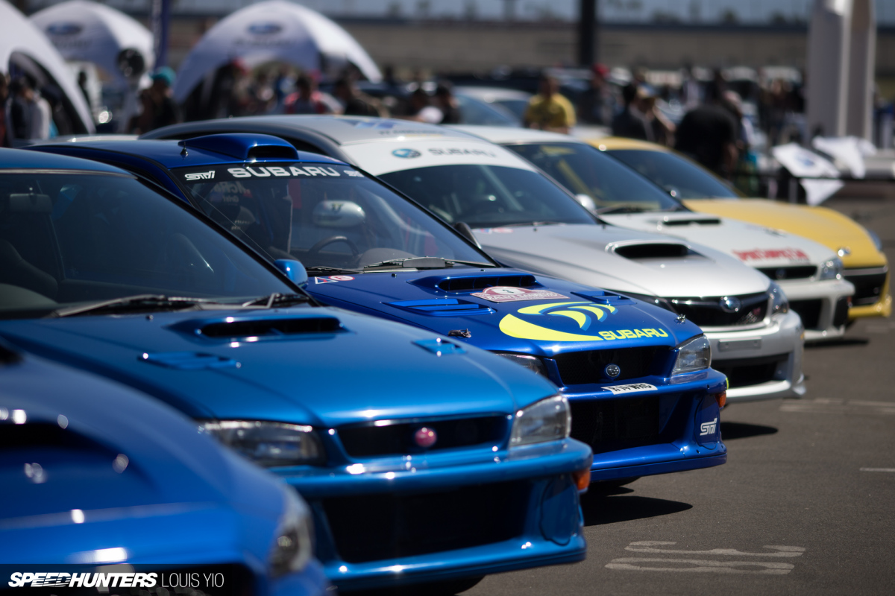

Why Its Loved
People all over the world love this car due to its iconic blend of design, motorsport heritage, and performace. The powerful turbo charger, the rally inspired engineering paird with its AWD system makes for a thrilling drivng experience.
Specifications
Colin McRae

Legendary Scottish rally driver, best known for his acheivments at the WRC. Colin drive for subraru and one the WRC in 1995.
Community
The Subaru WRX has a very large community. Whether you drive a subaru or not the community is always very welcoming.
Rally Performance

Renowned for its rally performance, its sport tuned suspension, powerhouse engine and AWD system, the Subaru WRX STI is a favourtie amoung rally enthusiasts.